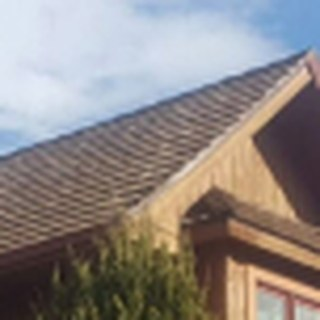
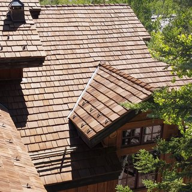

ROOF THAT MAKES
IT HOMECEDUR brings the warm aesthetic of natural cedar shakes and the enduring performance of engineered materials to every roof.
Whether you’re designing, building, or protecting a home for generations, CEDUR delivers beauty and performance you can trust.